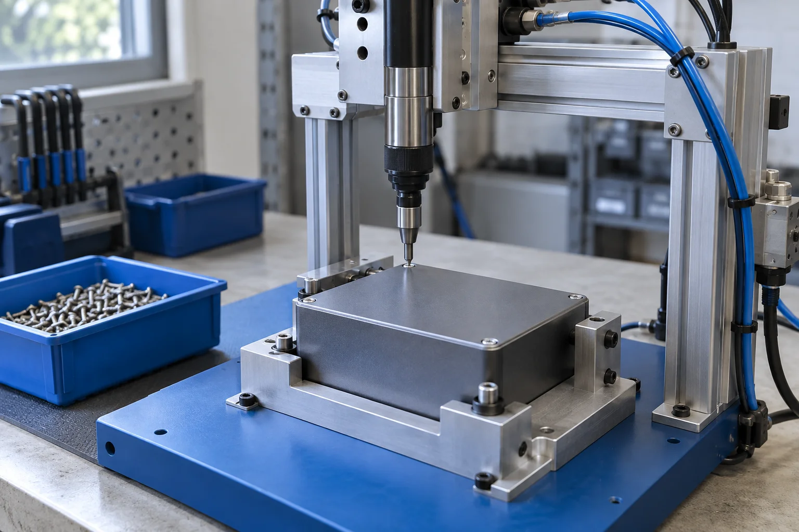
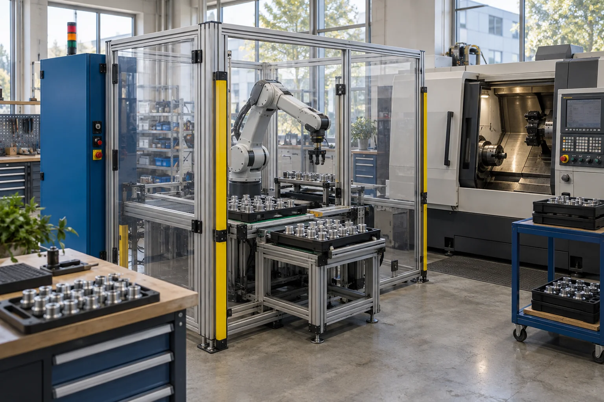
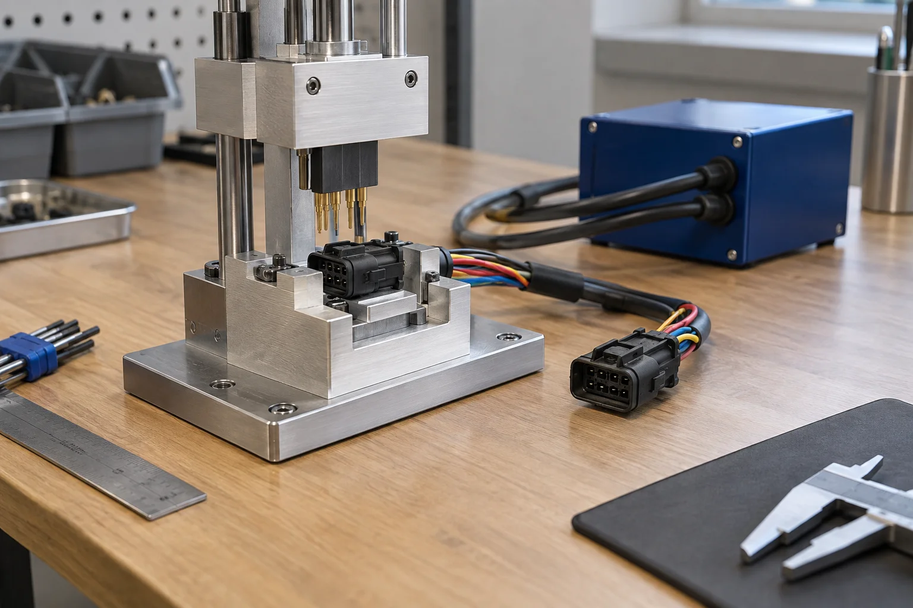

KC-14 / ENCLOSUREScrew-fastening assembly
Hold the workpiece consistently. Give the joining task a repeatable starting point.
See the scopeAssembly fixtures, machine tending and test stations. One defined task, the right operator hand-offs, and a team that stays through handover.
Find your automation task
Most automation questions start with the machine. Ours start with the workpiece, the person and the exceptions.
We are a 24-person integrator in Eindhoven, working with manufacturers across the Benelux. We take on bounded assembly, handling and test tasks, from paid feasibility through build and maintenance-team handover.
How a project moves forward
KC-14 / ENCLOSUREHold the workpiece consistently. Give the joining task a repeatable starting point.
See the scopeKeep the machine interface and the tray in the same conversation.
See the scope
KC-31 / CONNECTORA test result is only useful when the part is seated correctly.
See the scopeLoading, replenishment, inspection and changeovers do not disappear when a cell is installed. We put them in the brief and agree who owns them.